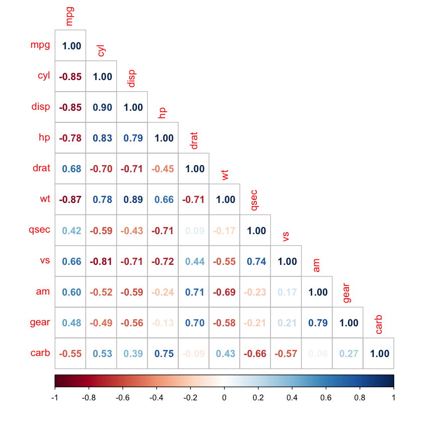
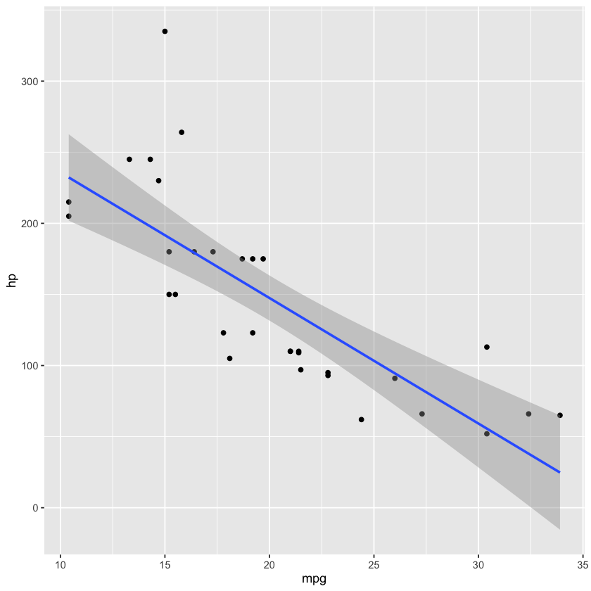
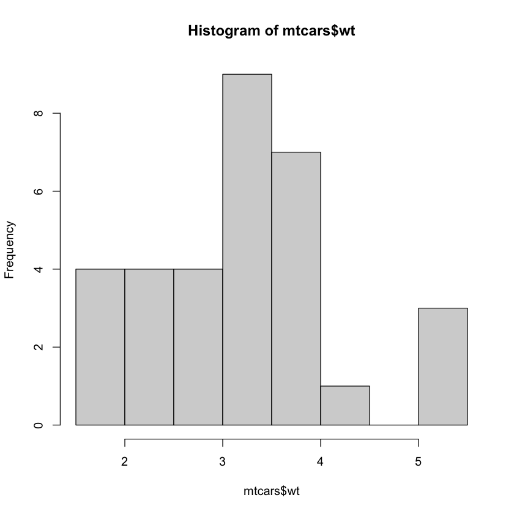
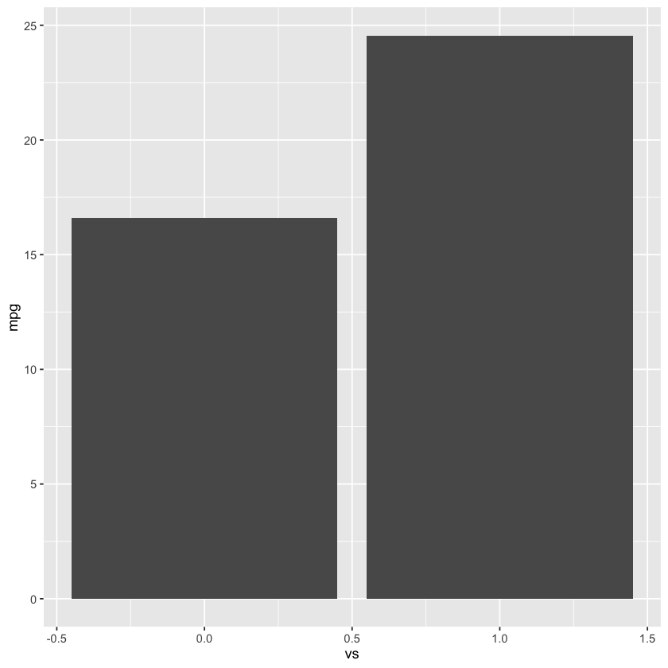
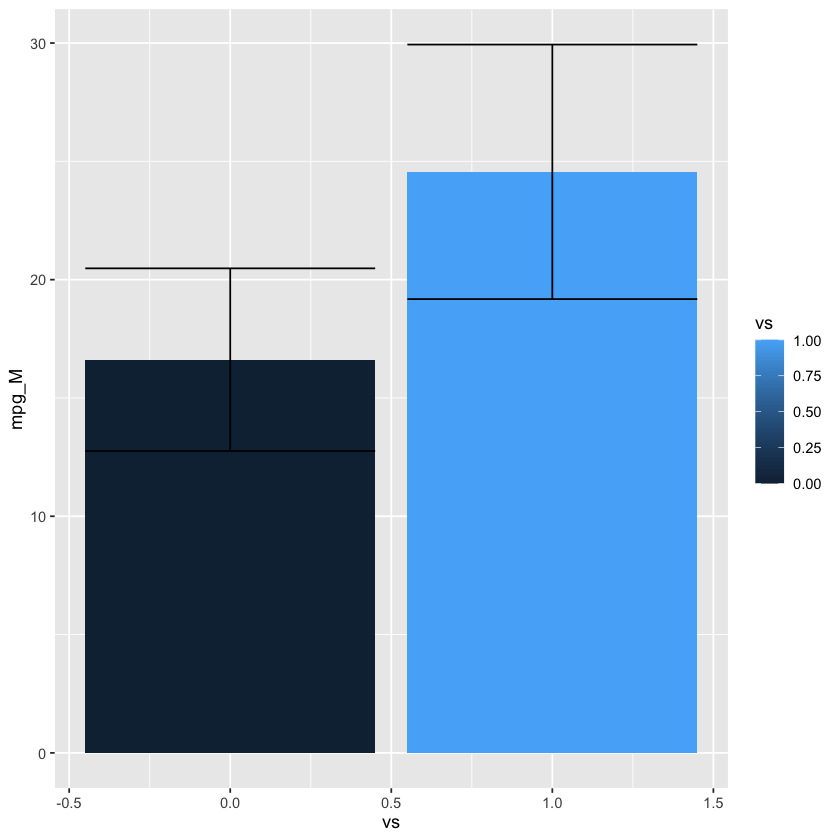
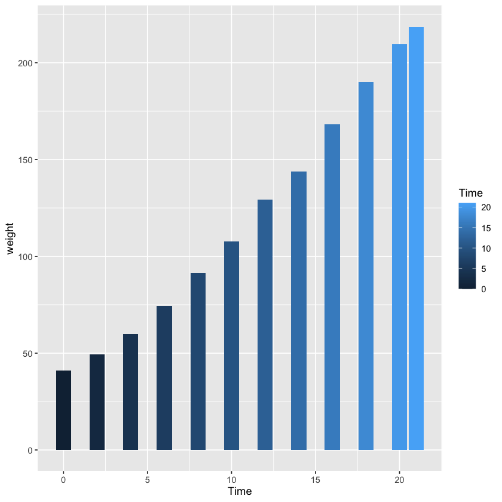

library(conflicted)
conflict_prefer("filter", "dplyr")
conflict_prefer("lag", "dplyr")[conflicted] Will prefer dplyr::filter over any other package. [conflicted] Will prefer dplyr::lag over any other package.
Get an idea of how the data is stored and descriptives of each column.
summary(mtcars) mpg cyl disp hp
Min. :10.40 Min. :4.000 Min. : 71.1 Min. : 52.0
1st Qu.:15.43 1st Qu.:4.000 1st Qu.:120.8 1st Qu.: 96.5
Median :19.20 Median :6.000 Median :196.3 Median :123.0
Mean :20.09 Mean :6.188 Mean :230.7 Mean :146.7
3rd Qu.:22.80 3rd Qu.:8.000 3rd Qu.:326.0 3rd Qu.:180.0
Max. :33.90 Max. :8.000 Max. :472.0 Max. :335.0
drat wt qsec vs
Min. :2.760 Min. :1.513 Min. :14.50 Min. :0.0000
1st Qu.:3.080 1st Qu.:2.581 1st Qu.:16.89 1st Qu.:0.0000
Median :3.695 Median :3.325 Median :17.71 Median :0.0000
Mean :3.597 Mean :3.217 Mean :17.85 Mean :0.4375
3rd Qu.:3.920 3rd Qu.:3.610 3rd Qu.:18.90 3rd Qu.:1.0000
Max. :4.930 Max. :5.424 Max. :22.90 Max. :1.0000
am gear carb
Min. :0.0000 Min. :3.000 Min. :1.000
1st Qu.:0.0000 1st Qu.:3.000 1st Qu.:2.000
Median :0.0000 Median :4.000 Median :2.000
Mean :0.4062 Mean :3.688 Mean :2.812
3rd Qu.:1.0000 3rd Qu.:4.000 3rd Qu.:4.000
Max. :1.0000 Max. :5.000 Max. :8.000 Correlations range from 1 to -1. A correlation coefficient of 1 means the two variables track perfectly in a positive direction. -1 represents two variables that are inversely related to each other (as one goes up the other goes down).
Use the cor command on a data frame to get the correlations of all numeric columns in the data frame. Note: the diagnol should always be 1 as each variable should correlate perfectly with itself. Note: The data in the matrix is redundant. The top half and bottom half show the same relationships.
car_corr = cor(mtcars)
car_corr| mpg | cyl | disp | hp | drat | wt | qsec | vs | am | gear | carb | |
|---|---|---|---|---|---|---|---|---|---|---|---|
| mpg | 1.0000000 | -0.8521620 | -0.8475514 | -0.7761684 | 0.68117191 | -0.8676594 | 0.41868403 | 0.6640389 | 0.59983243 | 0.4802848 | -0.55092507 |
| cyl | -0.8521620 | 1.0000000 | 0.9020329 | 0.8324475 | -0.69993811 | 0.7824958 | -0.59124207 | -0.8108118 | -0.52260705 | -0.4926866 | 0.52698829 |
| disp | -0.8475514 | 0.9020329 | 1.0000000 | 0.7909486 | -0.71021393 | 0.8879799 | -0.43369788 | -0.7104159 | -0.59122704 | -0.5555692 | 0.39497686 |
| hp | -0.7761684 | 0.8324475 | 0.7909486 | 1.0000000 | -0.44875912 | 0.6587479 | -0.70822339 | -0.7230967 | -0.24320426 | -0.1257043 | 0.74981247 |
| drat | 0.6811719 | -0.6999381 | -0.7102139 | -0.4487591 | 1.00000000 | -0.7124406 | 0.09120476 | 0.4402785 | 0.71271113 | 0.6996101 | -0.09078980 |
| wt | -0.8676594 | 0.7824958 | 0.8879799 | 0.6587479 | -0.71244065 | 1.0000000 | -0.17471588 | -0.5549157 | -0.69249526 | -0.5832870 | 0.42760594 |
| qsec | 0.4186840 | -0.5912421 | -0.4336979 | -0.7082234 | 0.09120476 | -0.1747159 | 1.00000000 | 0.7445354 | -0.22986086 | -0.2126822 | -0.65624923 |
| vs | 0.6640389 | -0.8108118 | -0.7104159 | -0.7230967 | 0.44027846 | -0.5549157 | 0.74453544 | 1.0000000 | 0.16834512 | 0.2060233 | -0.56960714 |
| am | 0.5998324 | -0.5226070 | -0.5912270 | -0.2432043 | 0.71271113 | -0.6924953 | -0.22986086 | 0.1683451 | 1.00000000 | 0.7940588 | 0.05753435 |
| gear | 0.4802848 | -0.4926866 | -0.5555692 | -0.1257043 | 0.69961013 | -0.5832870 | -0.21268223 | 0.2060233 | 0.79405876 | 1.0000000 | 0.27407284 |
| carb | -0.5509251 | 0.5269883 | 0.3949769 | 0.7498125 | -0.09078980 | 0.4276059 | -0.65624923 | -0.5696071 | 0.05753435 | 0.2740728 | 1.00000000 |
It can be very helpful to visualize the correlations. Here we use the corrplot command from the corrplot package. THe darker the color, the stronger the correlation. Red represents negative correlations while blue is used for positive correlations.
corrplot(car_corr, method="number", type="lower")
To get more details on a single correlation and to test it’s significance, use the cor.test command.
cor.test(mtcars$mpg, mtcars$hp)
Pearson's product-moment correlation
data: mtcars$mpg and mtcars$hp
t = -6.7424, df = 30, p-value = 1.788e-07
alternative hypothesis: true correlation is not equal to 0
95 percent confidence interval:
-0.8852686 -0.5860994
sample estimates:
cor
-0.7761684 This shows a significant correlation (p value less than .05).
Let’s visualize the relationship!
ggplot(mtcars, aes(x=mpg, y=hp)) + geom_point() + geom_smooth(method=lm)`geom_smooth()` using formula = 'y ~ x'

For a single sample t-test, a vector of numeric numbers is tested against a known value (mu). The test determines if the vector differs from the set/known value.
Let’s take a look at the weight of the cars in the dataset with a histogram to begin.
hist(mtcars$wt)
It looks like the distribution centers around 3, so let’s test the weights against the value of 3.
t.test(mtcars$wt, mu=3)
One Sample t-test
data: mtcars$wt
t = 1.256, df = 31, p-value = 0.2185
alternative hypothesis: true mean is not equal to 3
95 percent confidence interval:
2.864478 3.570022
sample estimates:
mean of x
3.21725 Here, we see that the values do not differ from 3 (p-value greater than .05). This makes sense since we chose a mu that based on the data.
In the real-world, this type of analysis may be useful to see if a sample differs from a known population value. For example, if the height residents of a country differ from the known global average.
A two samples independent t-test is used to compare two vectors and see if they come from the same sample.
For this example, we will compare V-shaped engines with straight engines on mpg.
Here we can see that the column vs has two levels, 0 and 1.
unique(mtcars$vs)Let’s also find out how many of each type there are.
table(mtcars$vs)
0 1
18 14 There are two ways to run the t-test. We can specify a numeric column and a binary identifier column for groups or we can use two numeric vectors.
Both methods will be demonstrated here, although they should yeild identical results.
t.test(mtcars$mpg~mtcars$vs)
Welch Two Sample t-test
data: mtcars$mpg by mtcars$vs
t = -4.6671, df = 22.716, p-value = 0.0001098
alternative hypothesis: true difference in means between group 0 and group 1 is not equal to 0
95 percent confidence interval:
-11.462508 -4.418445
sample estimates:
mean in group 0 mean in group 1
16.61667 24.55714 We see from the results, that there is a significant difference in mpg based on engine type. The means at the bottom tell us the average for each type.
Next, remember that you can subset data using a condition and column selection. We will create two vectors, one for each engine type and re-run the analysis. This is for demonstration purposes, you can choose either option and get the same results.
v_mpg = mtcars[mtcars$vs==0, "mpg"]
v_mpg
s_mpg = mtcars[mtcars$vs==1, "mpg"]
s_mpg
t.test(v_mpg, s_mpg)
Welch Two Sample t-test
data: v_mpg and s_mpg
t = -4.6671, df = 22.716, p-value = 0.0001098
alternative hypothesis: true difference in means is not equal to 0
95 percent confidence interval:
-11.462508 -4.418445
sample estimates:
mean of x mean of y
16.61667 24.55714 Notice, the results are identical. This just demonstrates that the test can be run with data in various formats.
Let’s visualize the results with a bar graph.
ggplot(mtcars, aes(x=vs, y=mpg)) +
geom_bar(stat = "summary", fun="mean")
Add error bars to the plot! Begin by calculating mean and standard deviation.
mpg_barplot_data <- mtcars %>% group_by(vs) %>% summarize(mpg_M = mean(mpg), mpg_SD = sd(mpg))
mpg_barplot_data| vs | mpg_M | mpg_SD |
|---|---|---|
| <dbl> | <dbl> | <dbl> |
| 0 | 16.61667 | 3.860699 |
| 1 | 24.55714 | 5.378978 |
Create the plot with the new dataset.
ggplot(mpg_barplot_data, aes(x=vs, y=mpg_M, fill=vs)) +
geom_bar(stat="identity", position="dodge") +
geom_errorbar(data = mpg_barplot_data,
aes(ymin = mpg_M - mpg_SD, ymax = mpg_M + mpg_SD, y = mpg_M),
position = position_dodge(width = .9))
We need another dataset to run a paired samples t-test. So we will load the ChickWeight data set. We will start by examining the data and reshaping it. Then we will run a paired samples t-test.
head(ChickWeight)| weight | Time | Chick | Diet | |
|---|---|---|---|---|
| <dbl> | <dbl> | <ord> | <fct> | |
| 1 | 42 | 0 | 1 | 1 |
| 2 | 51 | 2 | 1 | 1 |
| 3 | 59 | 4 | 1 | 1 |
| 4 | 64 | 6 | 1 | 1 |
| 5 | 76 | 8 | 1 | 1 |
| 6 | 93 | 10 | 1 | 1 |
See the help for definitions of each column.
?ChickWeight| ChickWeight {datasets} | R Documentation |
The ChickWeight data frame has 578 rows and 4 columns from an
experiment on the effect of diet on early growth of chicks.
ChickWeightAn object of class
c("nfnGroupedData", "nfGroupedData", "groupedData", "data.frame")
containing the following columns:
a numeric vector giving the body weight of the chick (gm).
a numeric vector giving the number of days since birth when the measurement was made.
an ordered factor with levels
18 < ... < 48
giving a unique identifier for the chick. The ordering of
the levels groups chicks on the same diet together and
orders them according to their final weight (lightest to
heaviest) within diet.
a factor with levels 1, ..., 4 indicating which experimental diet the chick received.
The body weights of the chicks were measured at birth and every second day thereafter until day 20. They were also measured on day 21. There were four groups on chicks on different protein diets.
This dataset was originally part of package nlme, and that has
methods (including for [, as.data.frame, plot and
print) for its grouped-data classes.
Crowder, M. and Hand, D. (1990), Analysis of Repeated Measures, Chapman and Hall (example 5.3)
Hand, D. and Crowder, M. (1996), Practical Longitudinal Data Analysis, Chapman and Hall (table A.2)
Pinheiro, J. C. and Bates, D. M. (2000) Mixed-effects Models in S and S-PLUS, Springer.
SSlogis for models fitted to this dataset.
require(graphics)
coplot(weight ~ Time | Chick, data = ChickWeight,
type = "b", show.given = FALSE)
Use the summary function to get an idea of the data in each column.
summary(ChickWeight) weight Time Chick Diet
Min. : 35.0 Min. : 0.00 13 : 12 1:220
1st Qu.: 63.0 1st Qu.: 4.00 9 : 12 2:120
Median :103.0 Median :10.00 20 : 12 3:120
Mean :121.8 Mean :10.72 10 : 12 4:118
3rd Qu.:163.8 3rd Qu.:16.00 17 : 12
Max. :373.0 Max. :21.00 19 : 12
(Other):506 We want to reshape the data so we can easily pull each day from its own column.
We use the reshape method to turn the data from long to wide format.
ChickWeightWide = reshape(ChickWeight, idvar = c("Chick", "Diet"), timevar = "Time", direction="wide")
ChickWeightWide| Chick | Diet | weight.0 | weight.2 | weight.4 | weight.6 | weight.8 | weight.10 | weight.12 | weight.14 | weight.16 | weight.18 | weight.20 | weight.21 | |
|---|---|---|---|---|---|---|---|---|---|---|---|---|---|---|
| <ord> | <fct> | <dbl> | <dbl> | <dbl> | <dbl> | <dbl> | <dbl> | <dbl> | <dbl> | <dbl> | <dbl> | <dbl> | <dbl> | |
| 1 | 1 | 1 | 42 | 51 | 59 | 64 | 76 | 93 | 106 | 125 | 149 | 171 | 199 | 205 |
| 13 | 2 | 1 | 40 | 49 | 58 | 72 | 84 | 103 | 122 | 138 | 162 | 187 | 209 | 215 |
| 25 | 3 | 1 | 43 | 39 | 55 | 67 | 84 | 99 | 115 | 138 | 163 | 187 | 198 | 202 |
| 37 | 4 | 1 | 42 | 49 | 56 | 67 | 74 | 87 | 102 | 108 | 136 | 154 | 160 | 157 |
| 49 | 5 | 1 | 41 | 42 | 48 | 60 | 79 | 106 | 141 | 164 | 197 | 199 | 220 | 223 |
| 61 | 6 | 1 | 41 | 49 | 59 | 74 | 97 | 124 | 141 | 148 | 155 | 160 | 160 | 157 |
| 73 | 7 | 1 | 41 | 49 | 57 | 71 | 89 | 112 | 146 | 174 | 218 | 250 | 288 | 305 |
| 85 | 8 | 1 | 42 | 50 | 61 | 71 | 84 | 93 | 110 | 116 | 126 | 134 | 125 | NA |
| 96 | 9 | 1 | 42 | 51 | 59 | 68 | 85 | 96 | 90 | 92 | 93 | 100 | 100 | 98 |
| 108 | 10 | 1 | 41 | 44 | 52 | 63 | 74 | 81 | 89 | 96 | 101 | 112 | 120 | 124 |
| 120 | 11 | 1 | 43 | 51 | 63 | 84 | 112 | 139 | 168 | 177 | 182 | 184 | 181 | 175 |
| 132 | 12 | 1 | 41 | 49 | 56 | 62 | 72 | 88 | 119 | 135 | 162 | 185 | 195 | 205 |
| 144 | 13 | 1 | 41 | 48 | 53 | 60 | 65 | 67 | 71 | 70 | 71 | 81 | 91 | 96 |
| 156 | 14 | 1 | 41 | 49 | 62 | 79 | 101 | 128 | 164 | 192 | 227 | 248 | 259 | 266 |
| 168 | 15 | 1 | 41 | 49 | 56 | 64 | 68 | 68 | 67 | 68 | NA | NA | NA | NA |
| 176 | 16 | 1 | 41 | 45 | 49 | 51 | 57 | 51 | 54 | NA | NA | NA | NA | NA |
| 183 | 17 | 1 | 42 | 51 | 61 | 72 | 83 | 89 | 98 | 103 | 113 | 123 | 133 | 142 |
| 195 | 18 | 1 | 39 | 35 | NA | NA | NA | NA | NA | NA | NA | NA | NA | NA |
| 197 | 19 | 1 | 43 | 48 | 55 | 62 | 65 | 71 | 82 | 88 | 106 | 120 | 144 | 157 |
| 209 | 20 | 1 | 41 | 47 | 54 | 58 | 65 | 73 | 77 | 89 | 98 | 107 | 115 | 117 |
| 221 | 21 | 2 | 40 | 50 | 62 | 86 | 125 | 163 | 217 | 240 | 275 | 307 | 318 | 331 |
| 233 | 22 | 2 | 41 | 55 | 64 | 77 | 90 | 95 | 108 | 111 | 131 | 148 | 164 | 167 |
| 245 | 23 | 2 | 43 | 52 | 61 | 73 | 90 | 103 | 127 | 135 | 145 | 163 | 170 | 175 |
| 257 | 24 | 2 | 42 | 52 | 58 | 74 | 66 | 68 | 70 | 71 | 72 | 72 | 76 | 74 |
| 269 | 25 | 2 | 40 | 49 | 62 | 78 | 102 | 124 | 146 | 164 | 197 | 231 | 259 | 265 |
| 281 | 26 | 2 | 42 | 48 | 57 | 74 | 93 | 114 | 136 | 147 | 169 | 205 | 236 | 251 |
| 293 | 27 | 2 | 39 | 46 | 58 | 73 | 87 | 100 | 115 | 123 | 144 | 163 | 185 | 192 |
| 305 | 28 | 2 | 39 | 46 | 58 | 73 | 92 | 114 | 145 | 156 | 184 | 207 | 212 | 233 |
| 317 | 29 | 2 | 39 | 48 | 59 | 74 | 87 | 106 | 134 | 150 | 187 | 230 | 279 | 309 |
| 329 | 30 | 2 | 42 | 48 | 59 | 72 | 85 | 98 | 115 | 122 | 143 | 151 | 157 | 150 |
| 341 | 31 | 3 | 42 | 53 | 62 | 73 | 85 | 102 | 123 | 138 | 170 | 204 | 235 | 256 |
| 353 | 32 | 3 | 41 | 49 | 65 | 82 | 107 | 129 | 159 | 179 | 221 | 263 | 291 | 305 |
| 365 | 33 | 3 | 39 | 50 | 63 | 77 | 96 | 111 | 137 | 144 | 151 | 146 | 156 | 147 |
| 377 | 34 | 3 | 41 | 49 | 63 | 85 | 107 | 134 | 164 | 186 | 235 | 294 | 327 | 341 |
| 389 | 35 | 3 | 41 | 53 | 64 | 87 | 123 | 158 | 201 | 238 | 287 | 332 | 361 | 373 |
| 401 | 36 | 3 | 39 | 48 | 61 | 76 | 98 | 116 | 145 | 166 | 198 | 227 | 225 | 220 |
| 413 | 37 | 3 | 41 | 48 | 56 | 68 | 80 | 83 | 103 | 112 | 135 | 157 | 169 | 178 |
| 425 | 38 | 3 | 41 | 49 | 61 | 74 | 98 | 109 | 128 | 154 | 192 | 232 | 280 | 290 |
| 437 | 39 | 3 | 42 | 50 | 61 | 78 | 89 | 109 | 130 | 146 | 170 | 214 | 250 | 272 |
| 449 | 40 | 3 | 41 | 55 | 66 | 79 | 101 | 120 | 154 | 182 | 215 | 262 | 295 | 321 |
| 461 | 41 | 4 | 42 | 51 | 66 | 85 | 103 | 124 | 155 | 153 | 175 | 184 | 199 | 204 |
| 473 | 42 | 4 | 42 | 49 | 63 | 84 | 103 | 126 | 160 | 174 | 204 | 234 | 269 | 281 |
| 485 | 43 | 4 | 42 | 55 | 69 | 96 | 131 | 157 | 184 | 188 | 197 | 198 | 199 | 200 |
| 497 | 44 | 4 | 42 | 51 | 65 | 86 | 103 | 118 | 127 | 138 | 145 | 146 | NA | NA |
| 507 | 45 | 4 | 41 | 50 | 61 | 78 | 98 | 117 | 135 | 141 | 147 | 174 | 197 | 196 |
| 519 | 46 | 4 | 40 | 52 | 62 | 82 | 101 | 120 | 144 | 156 | 173 | 210 | 231 | 238 |
| 531 | 47 | 4 | 41 | 53 | 66 | 79 | 100 | 123 | 148 | 157 | 168 | 185 | 210 | 205 |
| 543 | 48 | 4 | 39 | 50 | 62 | 80 | 104 | 125 | 154 | 170 | 222 | 261 | 303 | 322 |
| 555 | 49 | 4 | 40 | 53 | 64 | 85 | 108 | 128 | 152 | 166 | 184 | 203 | 233 | 237 |
| 567 | 50 | 4 | 41 | 54 | 67 | 84 | 105 | 122 | 155 | 175 | 205 | 234 | 264 | 264 |
Missing data will throw off the analysis, so we want to check for missing data.
any(is.na(ChickWeightWide))
sum(is.na(ChickWeightWide))We see that there are 22 missing data points.
We use the complete.cases function to drop rows with missing data.
ChickWeightWide = ChickWeightWide[complete.cases(ChickWeightWide), ]
ChickWeightWide| Chick | Diet | weight.0 | weight.2 | weight.4 | weight.6 | weight.8 | weight.10 | weight.12 | weight.14 | weight.16 | weight.18 | weight.20 | weight.21 | |
|---|---|---|---|---|---|---|---|---|---|---|---|---|---|---|
| <ord> | <fct> | <dbl> | <dbl> | <dbl> | <dbl> | <dbl> | <dbl> | <dbl> | <dbl> | <dbl> | <dbl> | <dbl> | <dbl> | |
| 1 | 1 | 1 | 42 | 51 | 59 | 64 | 76 | 93 | 106 | 125 | 149 | 171 | 199 | 205 |
| 13 | 2 | 1 | 40 | 49 | 58 | 72 | 84 | 103 | 122 | 138 | 162 | 187 | 209 | 215 |
| 25 | 3 | 1 | 43 | 39 | 55 | 67 | 84 | 99 | 115 | 138 | 163 | 187 | 198 | 202 |
| 37 | 4 | 1 | 42 | 49 | 56 | 67 | 74 | 87 | 102 | 108 | 136 | 154 | 160 | 157 |
| 49 | 5 | 1 | 41 | 42 | 48 | 60 | 79 | 106 | 141 | 164 | 197 | 199 | 220 | 223 |
| 61 | 6 | 1 | 41 | 49 | 59 | 74 | 97 | 124 | 141 | 148 | 155 | 160 | 160 | 157 |
| 73 | 7 | 1 | 41 | 49 | 57 | 71 | 89 | 112 | 146 | 174 | 218 | 250 | 288 | 305 |
| 96 | 9 | 1 | 42 | 51 | 59 | 68 | 85 | 96 | 90 | 92 | 93 | 100 | 100 | 98 |
| 108 | 10 | 1 | 41 | 44 | 52 | 63 | 74 | 81 | 89 | 96 | 101 | 112 | 120 | 124 |
| 120 | 11 | 1 | 43 | 51 | 63 | 84 | 112 | 139 | 168 | 177 | 182 | 184 | 181 | 175 |
| 132 | 12 | 1 | 41 | 49 | 56 | 62 | 72 | 88 | 119 | 135 | 162 | 185 | 195 | 205 |
| 144 | 13 | 1 | 41 | 48 | 53 | 60 | 65 | 67 | 71 | 70 | 71 | 81 | 91 | 96 |
| 156 | 14 | 1 | 41 | 49 | 62 | 79 | 101 | 128 | 164 | 192 | 227 | 248 | 259 | 266 |
| 183 | 17 | 1 | 42 | 51 | 61 | 72 | 83 | 89 | 98 | 103 | 113 | 123 | 133 | 142 |
| 197 | 19 | 1 | 43 | 48 | 55 | 62 | 65 | 71 | 82 | 88 | 106 | 120 | 144 | 157 |
| 209 | 20 | 1 | 41 | 47 | 54 | 58 | 65 | 73 | 77 | 89 | 98 | 107 | 115 | 117 |
| 221 | 21 | 2 | 40 | 50 | 62 | 86 | 125 | 163 | 217 | 240 | 275 | 307 | 318 | 331 |
| 233 | 22 | 2 | 41 | 55 | 64 | 77 | 90 | 95 | 108 | 111 | 131 | 148 | 164 | 167 |
| 245 | 23 | 2 | 43 | 52 | 61 | 73 | 90 | 103 | 127 | 135 | 145 | 163 | 170 | 175 |
| 257 | 24 | 2 | 42 | 52 | 58 | 74 | 66 | 68 | 70 | 71 | 72 | 72 | 76 | 74 |
| 269 | 25 | 2 | 40 | 49 | 62 | 78 | 102 | 124 | 146 | 164 | 197 | 231 | 259 | 265 |
| 281 | 26 | 2 | 42 | 48 | 57 | 74 | 93 | 114 | 136 | 147 | 169 | 205 | 236 | 251 |
| 293 | 27 | 2 | 39 | 46 | 58 | 73 | 87 | 100 | 115 | 123 | 144 | 163 | 185 | 192 |
| 305 | 28 | 2 | 39 | 46 | 58 | 73 | 92 | 114 | 145 | 156 | 184 | 207 | 212 | 233 |
| 317 | 29 | 2 | 39 | 48 | 59 | 74 | 87 | 106 | 134 | 150 | 187 | 230 | 279 | 309 |
| 329 | 30 | 2 | 42 | 48 | 59 | 72 | 85 | 98 | 115 | 122 | 143 | 151 | 157 | 150 |
| 341 | 31 | 3 | 42 | 53 | 62 | 73 | 85 | 102 | 123 | 138 | 170 | 204 | 235 | 256 |
| 353 | 32 | 3 | 41 | 49 | 65 | 82 | 107 | 129 | 159 | 179 | 221 | 263 | 291 | 305 |
| 365 | 33 | 3 | 39 | 50 | 63 | 77 | 96 | 111 | 137 | 144 | 151 | 146 | 156 | 147 |
| 377 | 34 | 3 | 41 | 49 | 63 | 85 | 107 | 134 | 164 | 186 | 235 | 294 | 327 | 341 |
| 389 | 35 | 3 | 41 | 53 | 64 | 87 | 123 | 158 | 201 | 238 | 287 | 332 | 361 | 373 |
| 401 | 36 | 3 | 39 | 48 | 61 | 76 | 98 | 116 | 145 | 166 | 198 | 227 | 225 | 220 |
| 413 | 37 | 3 | 41 | 48 | 56 | 68 | 80 | 83 | 103 | 112 | 135 | 157 | 169 | 178 |
| 425 | 38 | 3 | 41 | 49 | 61 | 74 | 98 | 109 | 128 | 154 | 192 | 232 | 280 | 290 |
| 437 | 39 | 3 | 42 | 50 | 61 | 78 | 89 | 109 | 130 | 146 | 170 | 214 | 250 | 272 |
| 449 | 40 | 3 | 41 | 55 | 66 | 79 | 101 | 120 | 154 | 182 | 215 | 262 | 295 | 321 |
| 461 | 41 | 4 | 42 | 51 | 66 | 85 | 103 | 124 | 155 | 153 | 175 | 184 | 199 | 204 |
| 473 | 42 | 4 | 42 | 49 | 63 | 84 | 103 | 126 | 160 | 174 | 204 | 234 | 269 | 281 |
| 485 | 43 | 4 | 42 | 55 | 69 | 96 | 131 | 157 | 184 | 188 | 197 | 198 | 199 | 200 |
| 507 | 45 | 4 | 41 | 50 | 61 | 78 | 98 | 117 | 135 | 141 | 147 | 174 | 197 | 196 |
| 519 | 46 | 4 | 40 | 52 | 62 | 82 | 101 | 120 | 144 | 156 | 173 | 210 | 231 | 238 |
| 531 | 47 | 4 | 41 | 53 | 66 | 79 | 100 | 123 | 148 | 157 | 168 | 185 | 210 | 205 |
| 543 | 48 | 4 | 39 | 50 | 62 | 80 | 104 | 125 | 154 | 170 | 222 | 261 | 303 | 322 |
| 555 | 49 | 4 | 40 | 53 | 64 | 85 | 108 | 128 | 152 | 166 | 184 | 203 | 233 | 237 |
| 567 | 50 | 4 | 41 | 54 | 67 | 84 | 105 | 122 | 155 | 175 | 205 | 234 | 264 | 264 |
Note, we lost 5 rows of data due to missing data.
We can now compare the first and second time points.
t.test(ChickWeightWide$weight.0, ChickWeightWide$weight.2, paired = TRUE)
Paired t-test
data: ChickWeightWide$weight.0 and ChickWeightWide$weight.2
t = -17.409, df = 44, p-value < 2.2e-16
alternative hypothesis: true mean difference is not equal to 0
95 percent confidence interval:
-9.496402 -7.525820
sample estimates:
mean difference
-8.511111 We can plot the average weight at each point and see that, as we might expect, weight goes up at each subsequent timepoint.
ggplot(ChickWeight, aes(x=Time, y=weight, fill=Time)) +
geom_bar(stat = "summary", fun="mean")
This concludes the introduction to analysis in R!